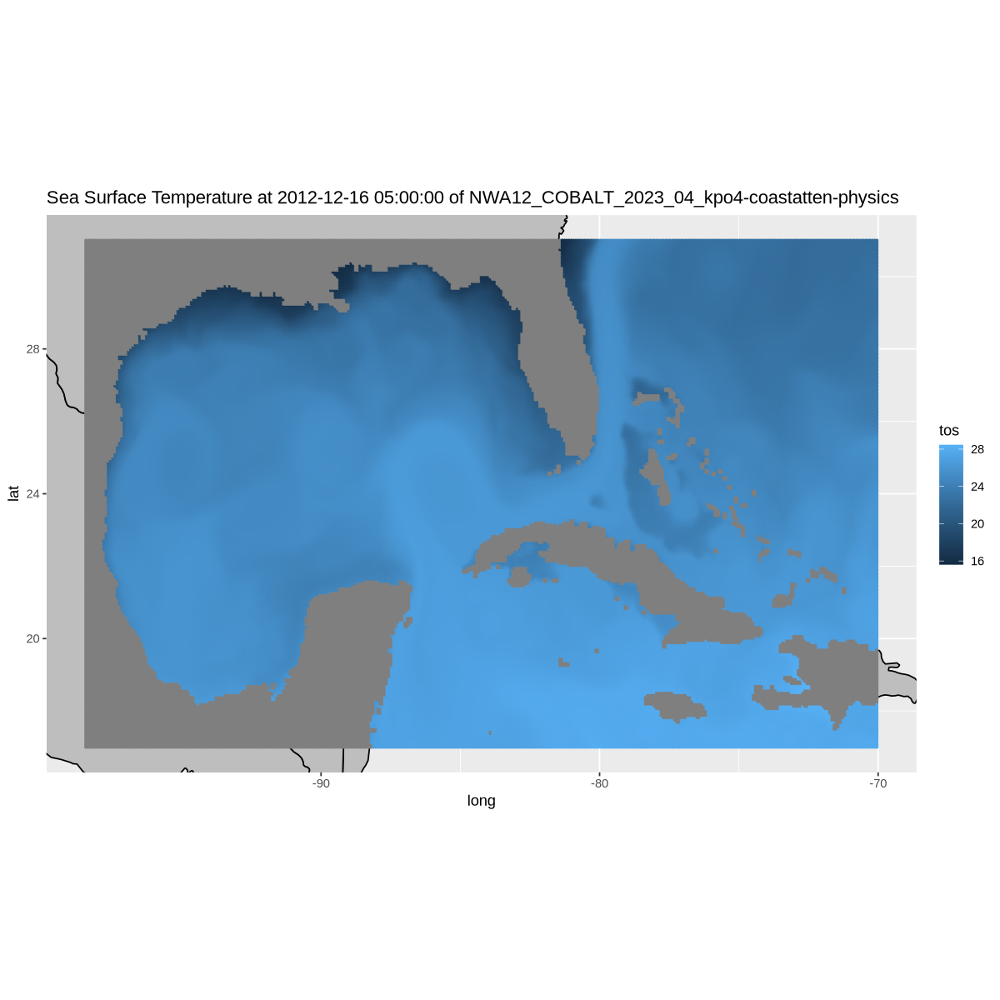

The following notebook is a quick demostration on how to use R to access the CEFI Cloud data. This is designed for users that prefer the programing interface to be R. There are already couple of great resource related to preprocessing and visualizing data in R. Therefore, the notebook will not repeat that part of the code but focusing on how to accessing the data from a R interface. The resources is listed below > - http://cran.nexr.com/web/packages/rerddap/vignettes/Using_rerddap.html (A detail introduction of rerddap package and show the visualization in many different datasets) > - https://ioos.github.io/ioos_code_lab/content/code_gallery/data_access_notebooks/2017-08-01-xtractoR.html (use a different package called xtractomatic to access the ERDDAP data)
On this page, we will explore the process of extracting a subset of model simualtion data produce from the regional MOM6 model. The model output is to support the Climate Ecosystem and Fishery Initiative. We will showcase how to utilize xarray and fsspec for accessing the data and visualize it on an detailed map. The currently available data can be viewed on - AWS - Google Cloud Storage
The contents of this folder encompass hindcast simulations derived from the regional MOM6 model spanning the years 1993 to 2019.
<p class="admonition-title" style="font-weight:bold">Launch R in Jupyterlab</p>
In addition to the standard R code demonstrated below, our current interface leverages JupyterLab to execute R code using the R kernel. To enable this functionality, we utilize the environment.yml file to create a Conda/Mamba environment. The primary objective is to install the r-irkernel package within this environment.
This installation of r-irkernel through Conda/Mamba ensures that the R kernel becomes available as an option when launching JupyterLab. Selecting the R kernel empowers users to utilize the JupyterLab interface for running R code effortlessly.
Packages used
In this example, we are going to use the reticulate library with Python to read the CEFI data into an R data structure.
From there you can operate on the data in R (or R Studio) as you would any other data.
N.B. The only library you need to read the data is the retiuclate library to access the python environment to read the data.
The other libraries are used to filter the data and make a plot on a detailed base map.
The last line show the python configuration that should have been set up when you loaded the conda environment to run this notebook.
library(reticulate)library(dplyr)library(maps)library(ggplot2)# reticulate::py_config() # check python version
Attaching package: ‘dplyr’
The following objects are masked from ‘package:stats’:
filter, lag
The following objects are masked from ‘package:base’:
intersect, setdiff, setequal, union
use_condaenv('cefi-cookbook-dev')
Get some python tools to read the data from the cloud storage
fsspec and xarray are python packages that are in the conda environment we build to run this notebook. We’re going to import them into our R environment and use them to create a pandas dataframe with lat,lon,tos as the columns
ERROR: Anonymous caller does not have storage.objects.get access to the Google Cloud Storage object. Permission 'storage.objects.get' denied on resource (or it may not exist)., 401
Anonymous caller does not have storage.objects.get access to the Google Cloud Storage object. Permission 'storage.objects.get' denied on resource (or it may not exist)., 401Traceback:
1. py_call_impl(callable, call_args$unnamed, call_args$named)
2. stop(structure(list(message = "gcsfs.retry.HttpError: Anonymous caller does not have storage.objects.get access to the Google Cloud Storage object. Permission 'storage.objects.get' denied on resource (or it may not exist)., 401\nRun `reticulate::py_last_error()` for details.",
. call = py_call_impl(callable, call_args$unnamed, call_args$named)), class = c("gcsfs.retry.HttpError",
. "python.builtin.Exception", "python.builtin.BaseException", "python.builtin.object",
. "error", "condition"), py_object = <environment>))
Get the variable long_name, date of the slice and data set title for the plot below
We transform the gridded data into column data with lon, lat, tos as columns. Take care: We are expanding along lon first and then by lat, so we reorder the xarray so that lon varies fastest to match.
The model lons are from 0 to 360, so we’re going to use this function to normalize them to -180 to 180 The map polygons are defined on -180 to 180 we need to adjust our values to see them on the map
normalize_lon <-function(x) { quotient <-round(x /360.) remainder <- x - (360.* quotient)# Adjust sign if necessary to match IEEE behaviorif (sign(x) !=sign(360.) && remainder !=0) { remainder <- remainder +sign(360.) *360. }return(remainder)}df_gulf$lon <-unlist(lapply(df_gulf$lon, normalize_lon))
Plot setup
Set up a resonable plot size and limits for the plot area of the world base map
Plot a mesh/dot colored according to the value of tos at each lat/lon location in the Gulf.
w <-map_data( 'world', ylim = ylim, xlim = xlim )p =ggplot() +geom_polygon(data = w, aes(x=long, y = lat, group = group), fill ="grey", color ="black") +coord_fixed(1.3, xlim = xlim, ylim = ylim) +geom_point(data = df_gulf, aes(color = tos, y=lat, x=lon), size=.5) +labs(title =paste(long_name, 'at', datetime, 'of', title))p

Accessing the data on the original model grid
The original model grid is explained in detail at the beginning of the cookbook. Understanding where the data are located on the earth requires you to merge the raw grid data file with the grid description. We’ll get both the data and the grid from the cloud storage just as we did in the example above and merge them using xarray, then we’ll convert them to a data.frame for plotting (or processing) in R.
N.B. we use the AWS cloud storage here. We used the Google Cloud Storage above. You can use either, but if you are computing in a cloud environment you’ll get better performance if you use the same cloud.
N.B. The “bucket” names are slightly different
N.B. Additional parameters (remote_options and target_options) are needed to let AWS know that the access does not require any credentials and could be done anonymously.
We’re using the lat and lon values from the static grid file to pair with each data value we read from the raw grid file to create a data.frame with lon,lat,sos